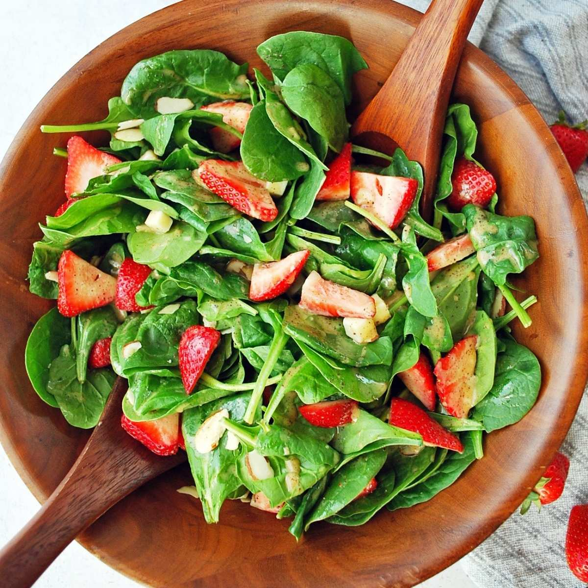

Strawberry Spinach Salad

This strawberry spinach salad is a great way to get kids to eat spinach! Someone brought this salad to a potluck dinner, and I had to have the recipe. Since then, I've made it many times and I've been asked for the recipe every time I take it somewhere.
This light and fresh salad lets sweet flavors shine (we’re looking at you strawberries), but is complemented by the sharp textures and flavors of our other ingredients.
If you truly are someone who isn't into spinach you could go for something like romaine, but we also love this salad with arugula. You could even sneak some in along with the spinach to get that nice peppery bite. While we love this classic combo of flavors, feel free to switch things up!
Ingredients:
Dressing
- ½ cup white sugar
- ½ cup olive oil
- ¼ cup distilled white vinegar
- 2 tablespoons sesame seeds
- 1 tablespoon poppy seeds
- 1 tablespoon minced onion
- ¼ teaspoon paprika
- ¼ teaspoon Worcestershire sauce
Salad
- 1 quart strawberries - cleaned, hulled and sliced
- 10 ounces fresh spinach - rinsed, dried and torn into bite-size pieces
- ¼ cup almonds, blanched and slivered
Steps:
- Make dressing: Whisk together sugar, oil, vinegar, sesame seeds, poppy seeds, onion, paprika, and Worcestershire in a medium bowl. Cover and chill for 1 hour.
- Make salad: Combine strawberries, spinach, and almonds in a large bowl.
- Pour dressing over salad; toss to coat. Refrigerate for 10 to 15 minutes before serving.
Back to index